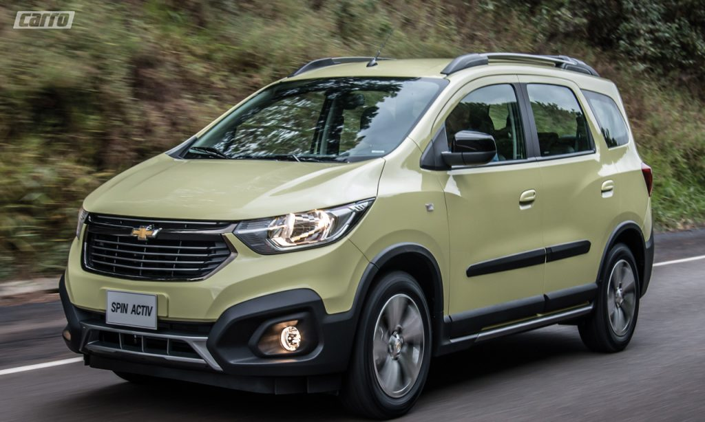
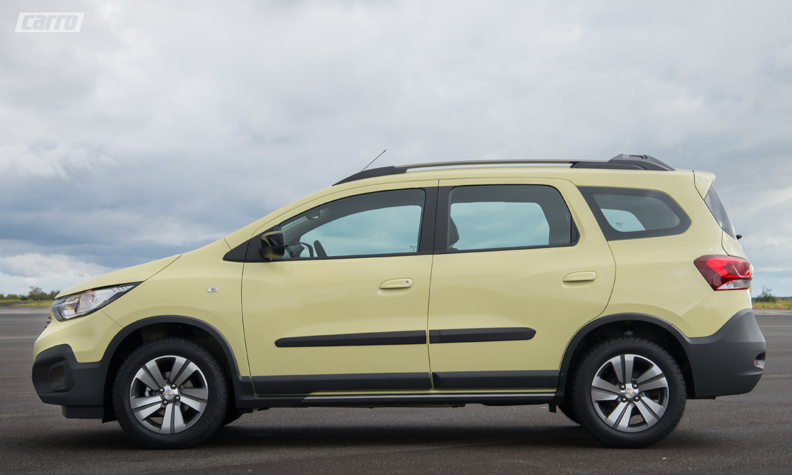
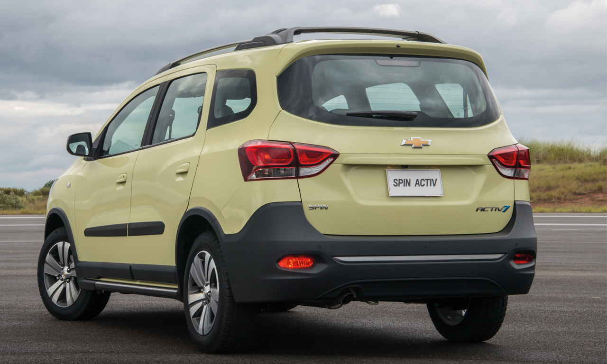
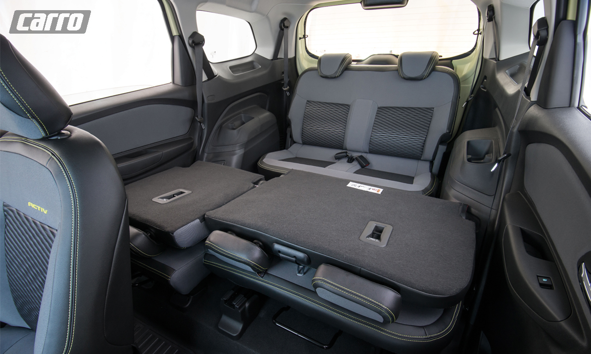

Chevrolet Spin Activ7: Predicados melhorados
por Rafael Dea | ago 20, 2018
Enfim, a linha 2019 do Chevrolet Spin Activ estreou a opção de sete lugares. Outras novidades estão no visual repaginado, nas mudanças mecânicas e nos novos itens de segurança
A versatilidade sempre foi a palavra de ordem do Chevrolet Spin. Um sucesso entre as famílias e os frotistas. Do lançamento em 2012 para cá, segundo o fabricante, são 200.000 unidades vendidas no mercado nacional. Aliás, só para citar, de janeiro a maio deste ano, a Fenabrave (Federação Nacional da Distribuição de Veículos Automotores) registra 7.778 unidades licenciadas. E se você o considerava apenas uma compra racional, agora pode vê-lo com outros olhos e algumas pitadas de emoção. E nosso primeiro contato foi com a versão Activ.
O desenho mais horizontalizado exibe uma dianteira com novos para-choques, grade frontal em acabamento Dark Chrome, faróis dotados de máscara negra/luz de posição diurna (DRL) de LED, para-lamas com luzes de seta e capô mais inclinado. Este olhar revigorado foi estendido à traseira. Ela exibe defletor de teto, lanternas bipartidas, além do local da placa migrar do para-choque para a tampa do porta-malas. A propósito, desapareceu o controverso estepe pendurado do lado de fora. Essas mudanças estéticas alteraram o comprimento da carroceria de 4.360 mm para 4.415 mm na linha 2019. Os destaques da lateral estão no rack de teto em “U” e nas rodas de liga leve de 16”.
A personalidade mais jovial também está no interior, pois ao abrir a porta chamam a atenção os acabamentos revistos, assim como o quadro de instrumentos emprestado do Tracker em substituição ao antigo inspirado nas motocicletas. Ele é dotado de conta-giros analógico e velocímetro digital. Também estão diferentes as saídas de ar, porta-luvas, comandos elétricos dos vidros/travas/retrovisores e a moldura da central multimídia MyLink com conectividade Android Auto e Apple CarPlay. Outra comodidade é o serviço OnStar. Importantes itens de segurança foram incorporados, entre eles sensor crespuscular/chuva, alerta de esquecimento de objetos ou pessoas no banco traseiro (encontrado nos Equinox LT e Premier e agora na linha 2019 de Onix e Prisma), Isofix e Top Tether para fixação de bancos infantis, cinto de segurança e apoio de cabeça para o quinto ocupante. Porém, faltou o controle de estabilidade.
O Spin Activ era oferecido somente com cinco lugares, porém, isso mudou com a versão Activ7. A segunda fileira de bancos montada sobre trilhos permite ser movimentada em até 50 mm para frente e 60 mm para trás, com encostos reclináveis em seis posições. Lá atrás, os dois bancos extras oferecem espaço suficiente para adultos em viagens curtas. Apesar dessa novidade, o modelo continua à venda na configuração de cinco lugares. Nela, o porta-malas de 710 litros vai a 756 litros com a segunda fileira à frente. Já com a terceira fileira erguida a capacidade do compartimento de carga passa a 162 litros. Até o fechamento desta edição os preços não haviam sido divulgados, porém, estimamos um valor de R$ 80.000 (cinco lug.) e de R$ 83.000 (sete lug.).
Quer comentar? Mande seu comentário
Mande seu comentário aqui
Comentários:

Maria do Carmo Santana
Há 24 minutos atrás...
Gostei da matéria

Diego Pagotto
Há 5 minutos atrás...
TOP